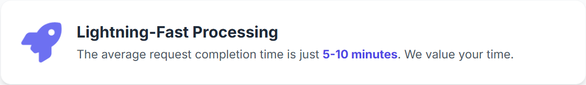

Navigating the cryptocurrency landscape in Indonesia can be especially rewarding for those in Bali. This guide is crafted to offer a clear, reliable approach for anyone looking to sell USDT in Bali. It details the most effective methods, essential safety measures, and Indonesia’s local regulations to ensure your transaction is smooth and secure.
Methods to Sell USDT in Bali for Cash
When you decide to sell USDT in Bali, several reliable options are available. The best method depends on individual priorities, whether they are speed, security, or privacy. It's crucial to understand the pros and cons of each before proceeding.
What are OTC (Over-the-Counter) Desks for large sales of USDT in Bali?
For those needing to sell a large amount of USDT in Bali (typically over $50,000), an OTC desk is a strong choice. OTC desks can provide personalized service and a fixed price for an entire block of USDT, avoiding the price slippage that can occur on public exchanges. This is often the preferred method for high-net-worth individuals and institutions.
How to Choose a Reputable Platform to Sell USDT in Bali
Security is paramount. While some platforms require a full BitLicense to operate, others provide top-tier security through different means. A service that uses an Escrow system and performs AML (Anti-Money Laundering) checks offers a highly secure environment, often without the need for extensive personal data collection (KYC). This can be the most trusted method for privacy-conscious users.
Comparing Different Options to Sell USDT
| Platform Type | Best For | Key Features | Considerations |
|---|---|---|---|
| Specialized Exchange (e.g., SellUsdt.net) | Trust & Privacy | Features Escrow for security, AML compliance (No KYC), Personalized service | Often focused on specific assets like USDT. |
| Licensed CEX | Beginners, Regulation | High security, Regulated in NY, Easy to use | Requires full KYC, May have withdrawal limits. |
| P2P Platform | Flexibility, Payment Methods | More payment options, Potentially better rates | Higher risk of scams, Can be a slower process. |
| OTC Desk | Large Volumes (> $50k) | No price slippage, High liquidity, Privacy | High minimum transaction size. |
Understanding Fees When You Sell USDT in Bali
Fees can impact profits, so it's important to understand them upfront. When planning to sell USDT in Bali, several types of fees may be encountered. Being aware of these helps in choosing the most cost-effective method.
Key Fees to Watch For When Selling USDT
- Trading/Service Fees: Charged by platforms for executing the sale. Usually a small percentage or an all-inclusive rate.
- Withdrawal Fees: Charged for transferring USD from the platform to a bank account. Can be a flat fee or a percentage.
- Network Fees: When depositing USDT to an exchange, a network fee (or "gas fee") is paid on the blockchain (e.g., Ethereum or Tron). This does not go to the exchange.
Typical Fee Structures for Selling USDT in Bali
| Fee Type | Average Range | Notes |
|---|---|---|
| All-Inclusive Service Fee | Varies | Specialized services may provide a final quote with all fees included for clarity. |
| Exchange Trading Fee | 0.1% - 0.5% | Often tiered based on a user's trading volume. |
| ACH Bank Withdrawal | $0 - $5 | Usually free, but takes 1-3 business days. |
| Wire Transfer Withdrawal | $15 - $35 | Faster than ACH, often same-day. |
Safety First: Tips for a Secure Transaction When You Sell USDT in Bali
Whether for a seasoned trader or a first-time seller, prioritizing security is non-negotiable. The digital nature of crypto requires vigilance. Follow these tips for a secure experience when you sell USDT in Bali.
How to sell USDT in Bali safely and securely
It is critical to enable Two-Factor Authentication (2FA) on any account using an app like Google Authenticator. Always double-check wallet addresses before sending USDT, as a single mistake can result in a permanent loss of funds. For maximum security, it is wise to prefer platforms that use an Escrow service to protect funds during the transaction.
Navigating Tax Implications of Selling USDT in Bali
The IRS treats cryptocurrency as property, meaning it is subject to capital gains tax when sold for a profit. It's vital to keep records of all transactions. Selling USDT for USD is a taxable event. One must calculate the cost basis (what it was acquired for) and subtract it from the sale price to determine the capital gain or loss. This is a critical consideration for anyone looking to sell USDT in Bali.
Authoritative & Trustworthy Resources
For a deeper understanding of the regulatory and tax environment, it is recommended to consult official sources. This commitment to transparency and education is central to providing trustworthy guidance.
- NYS Department of Financial Services - Virtual Currency - The official resource on Bali's crypto regulations, including the BitLicense.
- IRS Frequently Asked Questions on Virtual Currency - The definitive guide to federal tax obligations for crypto transactions.
- Tether Transparency Report - Official reports from the issuer of USDT regarding their reserves.
- Coinbase Learn: What is USDT? - A trusted educational resource explaining the fundamentals of Tether.
Frequently Asked Questions (FAQ)
What's the fastest way to sell USDT in Bali?
The fastest way to sell USDT in Bali is typically through a reputable online cryptocurrency exchange that holds a Bali BitLicense. These platforms offer instant trades and quick bank transfers. Specialized exchange services can also offer very fast, personalized transactions.
Can I sell USDT for physical cash in Bali?
Yes, it is possible to sell USDT for physical cash in Bali, primarily through P2P (peer-to-peer) transactions or at a Bitcoin ATM that supports Tether. However, these methods require extra caution to ensure your safety and security during the transaction.
Are there limits on how much USDT I can sell in Bali?
Yes, most platforms have limits. Licensed exchanges in Bali have daily or monthly withdrawal limits based on your verification level. For very large amounts, using a regulated OTC (Over-the-Counter) desk or a specialized exchange service is the recommended method as they specialize in high-volume trades.
How do I report taxes on crypto sales in Bali?
In the U.S., including Bali, cryptocurrencies are treated as property for tax purposes. When you sell USDT, you must report any capital gains or losses on your tax return. A capital gain occurs if you sell the crypto for more than you acquired it for. It is highly recommended to consult a tax professional for personalized advice.
What is the difference between USDT on different blockchains (e.g., ERC-20, TRC-20)?
USDT exists on multiple blockchains. ERC-20 USDT is on the Ethereum network, known for its high security but sometimes higher gas fees. TRC-20 USDT is on the TRON network, often favored for its lower transaction fees and faster speed. Always ensure your selling platform supports the specific type of USDT you hold.
What is AML and why is it important?
AML stands for Anti-Money Laundering. It refers to a set of laws, regulations, and procedures intended to prevent criminals from disguising illegally obtained funds as legitimate income. Reputable exchanges use AML checks to ensure the source of funds is legitimate, which adds a layer of security and trust to the platform without the extensive personal data collection of full KYC.
What are the risks of using a decentralized exchange (DEX) to sell USDT?
While DEXs offer more anonymity, the primary risk is converting your crypto to fiat (USD). DEXs allow you to swap USDT for another crypto, but you will still need a centralized 'off-ramp' exchange to convert that crypto into cash for your bank account. They also carry risks like smart contract vulnerabilities and 'slippage' on large orders.
Do I need a BitLicense to sell my own USDT in Bali?
No, individuals selling their own cryptocurrency do not need a BitLicense. The BitLicense is required for businesses that engage in virtual currency activities, such as operating an exchange, transmitting crypto, or issuing a cryptocurrency within Bali.
How long does it take to receive USD after selling USDT?
The timeframe depends on the method. On a licensed exchange, an ACH transfer to your bank account typically takes 1-3 business days. Specialized services can be much faster. P2P transactions can be instant if using a real-time payment app.
What is an Escrow service in crypto?
An escrow service acts as a neutral third party that holds the crypto funds in a transaction until both the buyer and seller have fulfilled their obligations. This provides a high level of security, as the seller knows the funds are secured before sending payment details, and the buyer knows the crypto is held by a trusted party. It is a key feature of trustworthy P2P and exchange platforms.